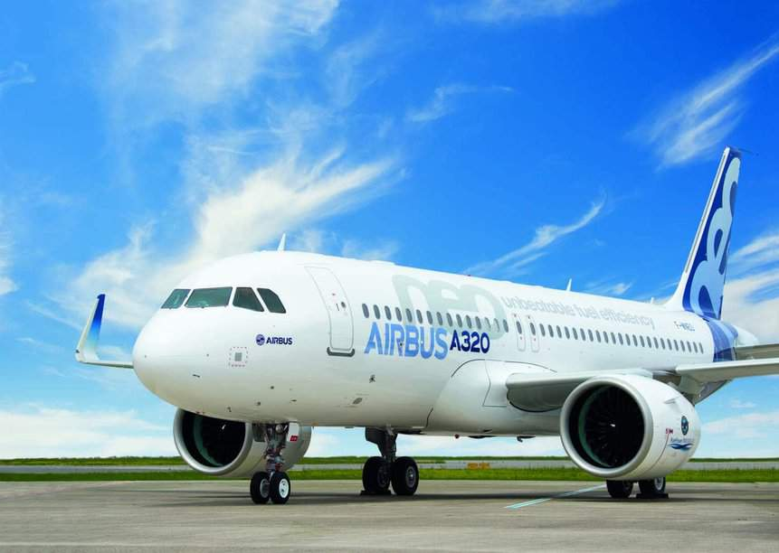
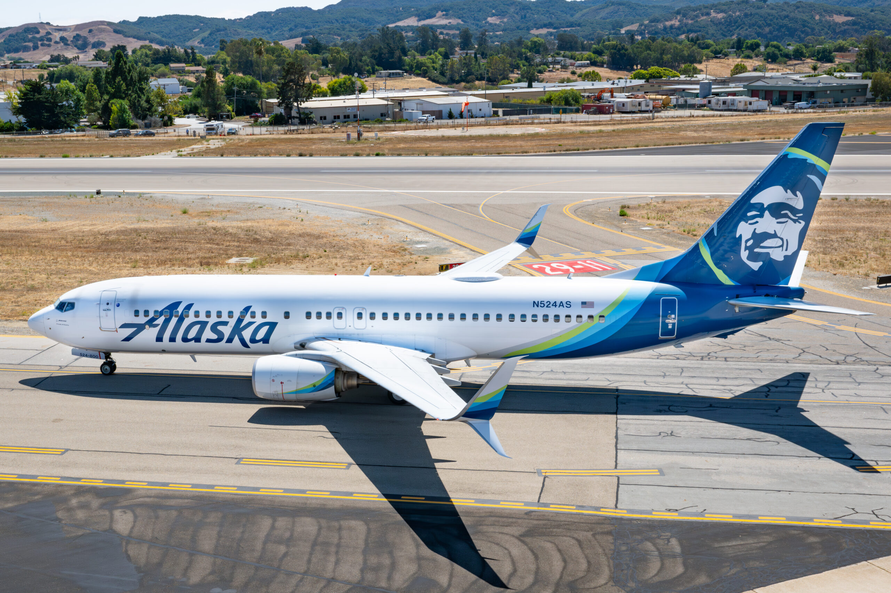

Aviación Comercial
La aviación comercial es una rama de la aviación civil que se dedica al transporte regular de pasajeros y carga. Incluye a las aerolíneas comerciales que operan vuelos programados y chárter, y es fundamental para la conectividad global y la economía mundial.
Airbus A320: El rey de los cielos cortos y medianos
El Airbus A320 es uno de los aviones comerciales más populares y utilizados en el mundo. Es un avión de pasillo único, lo que significa que tiene un solo pasillo que recorre toda la cabina. Esto lo hace ideal para vuelos de corta y media distancia, como los que conectan ciudades dentro de un mismo país o regiones cercanas.
Boeing 737-800: Un clásico de los cielos
El Boeing 737-800 es uno de los aviones comerciales más populares y utilizados en todo el mundo. Pertenece a la familia de aviones de fuselaje estrecho y es conocido por su eficiencia, fiabilidad y capacidad para transportar un gran número de pasajeros en rutas de corta y media distancia..